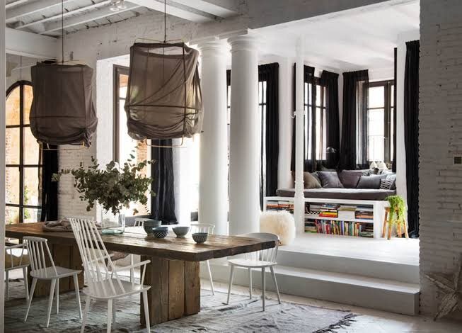
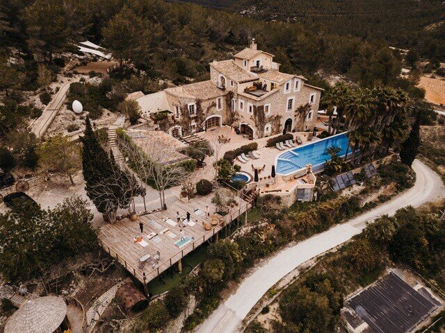
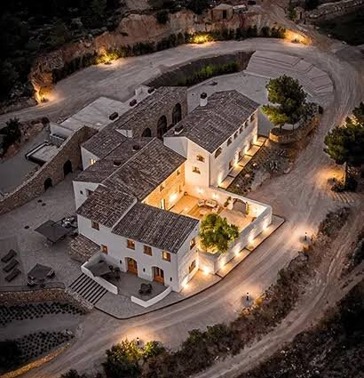
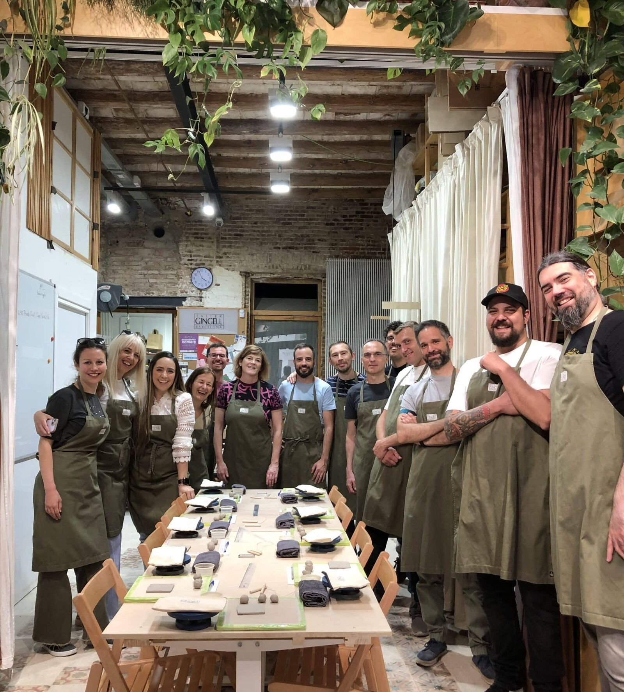
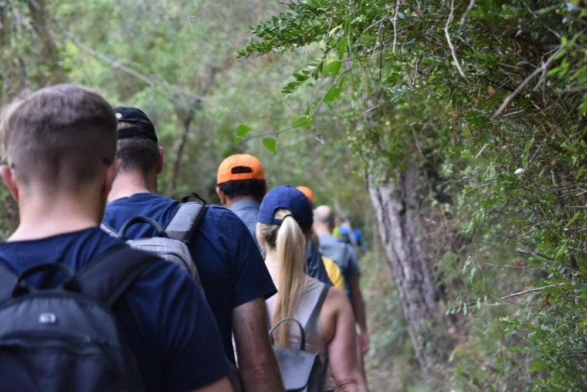
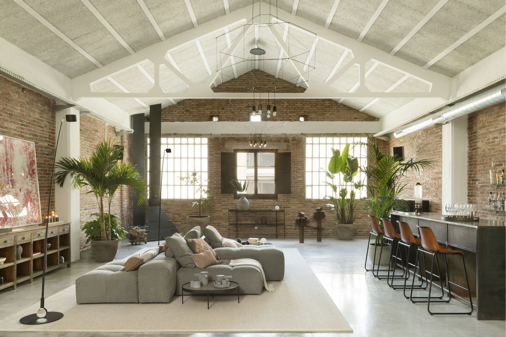
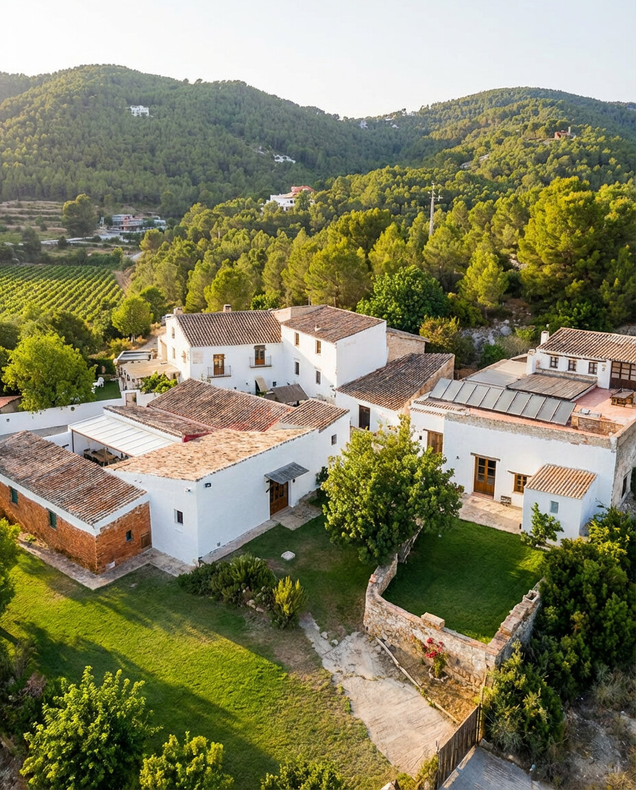
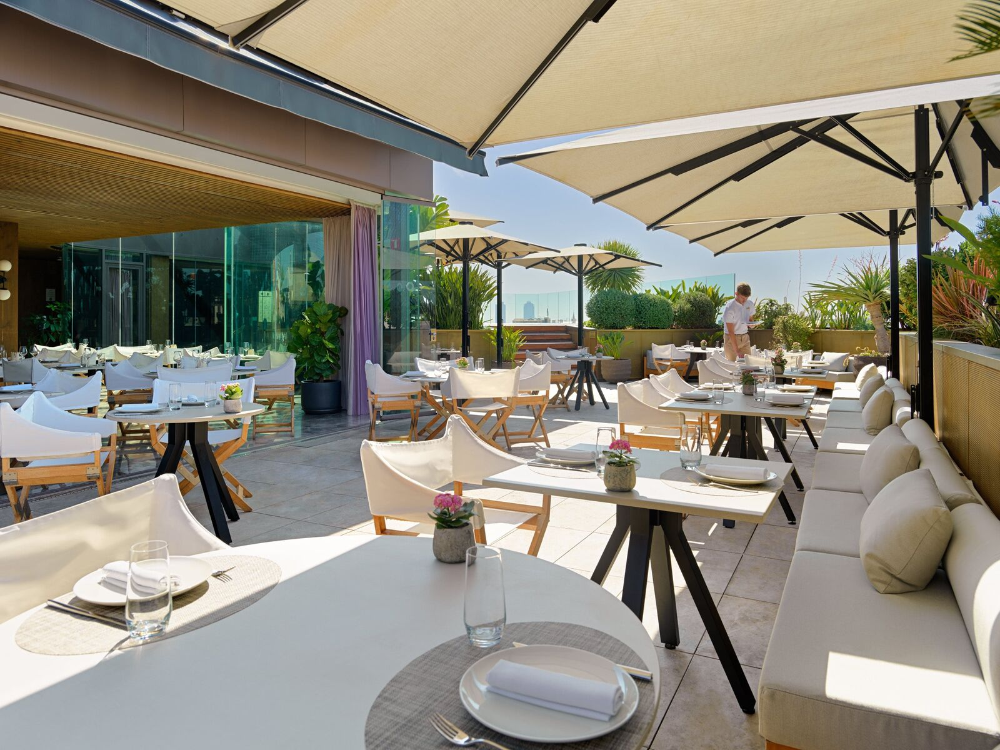
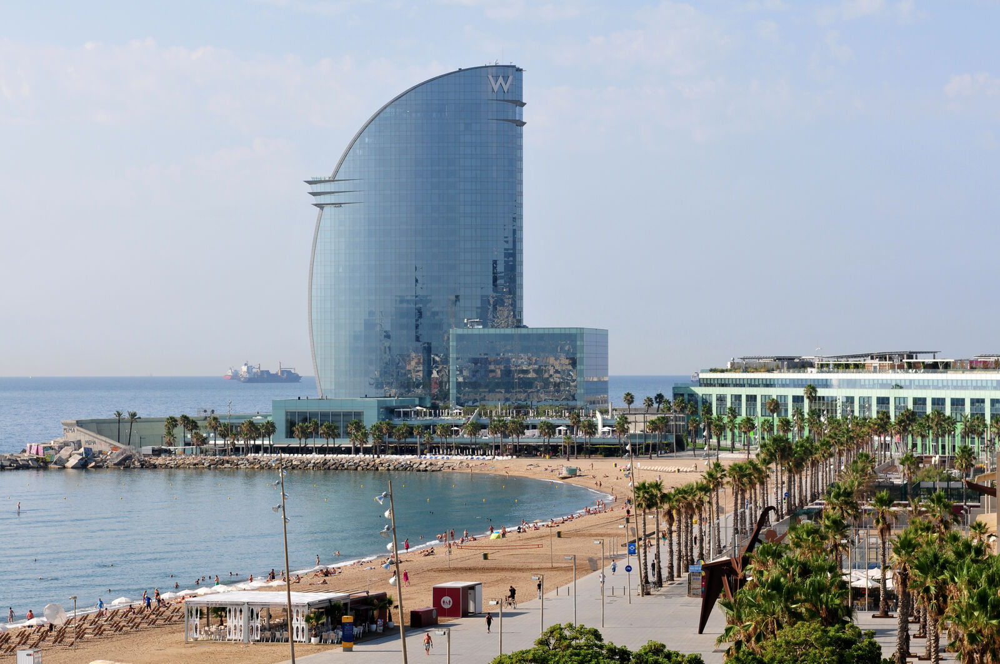
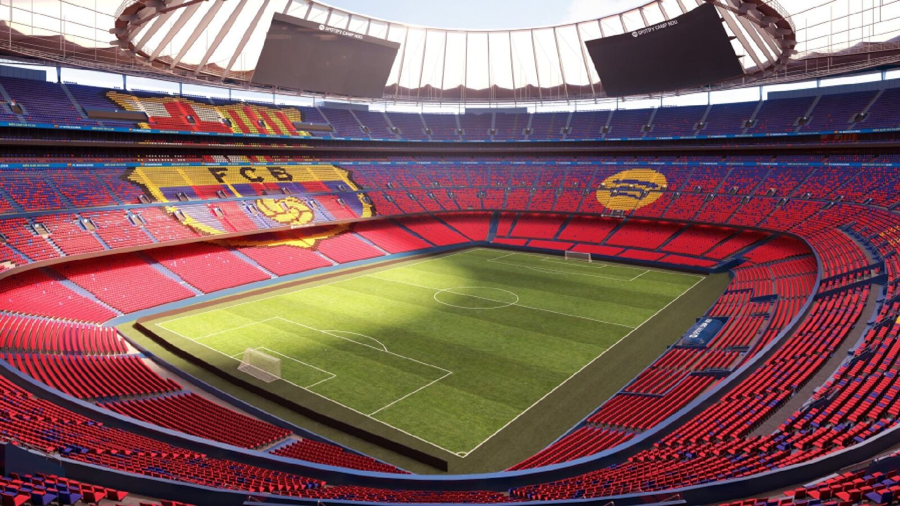

High-Stakes Leadership Offsites in Barcelona.
Where venture-backed founders and C-suites dismantle operational drag, resolve executive friction, and lock in binding 90-day compacts.Trusted by operators who’ve built at
What breaks when fast-growing companies hit pressure in the AI era
When fast-growing scale-ups stall, the point of failure is no longer code, tools, or AI models, it is leadership alignment. In remote-first companies, AI creates an illusion of velocity while unspoken C-suite friction quietly delays critical decisions. Without physical proximity, teams avoid hard commercial trade-offs, hiding behind polite Slack messages while the board waits for decisive execution.
Source: Noam Wasserman, Harvard Business School
Velocity Drag
AI tools generate code, slide decks, and workflows in seconds, but executive decision latency worsens. Fragmented bottom-up tools proliferate while leadership avoids tough calls on ownership, capital allocation, and strategy.
Remote Latency
In distributed teams, leadership misalignment stays hidden longer. Without informal face-to-face debate, disagreement turns into passive friction: silent Slack approvals, polite meetings, and territorial silo defense.
The Offsite Intervention
You cannot dismantle systemic relational debt over a Zoom call. A structured offsite pulls founders and C-suite peers into a dedicated room to surface unexpressed tension, codify decision rights (RACI), and leave with a binding 90-day compact.
Who will join us
Select the operational depth and cohort composition matched to your team’s current phase.
The Slowing-Down Offsite
2–6 co-founders / exec committee
- Behavioral self-awareness & stress diagnostics
- Relational reset & founder dynamics under pressure
- 500-year-old historic stone estate outside Girona
Strategy to Execution Offsite
5–12 C-suite executives
- Confidential 1:1 C-suite intake & friction matrix
- In-room operator mediation by former CEOs
- RACI governance compact & 90-day execution board
- Secluded private Catalan Masia
Company Offsite
12 to 100 people
- Remote-first & distributed scale-ups
- Turnkey logistics, experiential dining & team cohesion
- Poblenou Creative Atelier / Norrsken House + private catamaran
Three Places to Go
Physical environments curated specifically for strategic focus, creative friction, or team connection.

Setting: Urban Innovation Atelier & Poblenou Loft / Norrsken House overlooking the sea.
Dynamic, walkable creative hub. Designed for cross-functional company offsites, product roadmap hackathons, and high-energy distributed team reunions.

Setting: Secluded 500-year-old historic countryside estate (Solsona / Costa Brava).
High-privacy retreat surrounded by quiet nature, with zero urban distractions. Ideal for high-stakes C-suite strategy-to-execution mediation and co-founder resets.

Setting: Penedès wine region estate & coastal hills near Sitges.
The perfect midpoint between deep focus and sensory immersion. Designed for executive committees wanting strategic debates by day and world-class wine gastronomy by dusk.
Choose Your Cadence
Select the operational depth required, from an acute 48-hour surgical alignment to a comprehensive five-day strategic reset.
The Surgical Sprint
48 hours · high intensity
- Confidential intake and friction diagnostic before arrival
- Two 4-hour closed-room plenary sessions
- Working dinner with direct facilitator steering
- RACI sign-off and binding compact by close of Day 2
Signed 90-day compact and unblocked decision rights.
The Complete Intervention
72 hours · strategic and experiential
- Day 1: Intake review, friction matrix, and RACI alignment
- Day 2: Commercial roadmap lab, open-hearth dinner, wine pairing
- Day 3: 90-day compact lock-in, sunset catamaran debrief
Signed 90-day compact, a validated roadmap, and renewed team trust.
The Transformational Reset
Full week · comprehensive reset
- Parallel leadership and functional-team tracks
- Full-day product innovation lab and GTM stress-test
- Full buyout of a secluded countryside estate
- Multiple structured experiential and cultural sessions
A company-wide operating charter and a reset operating cadence.
Inside the Barcelona Experience







Calibrated Decompression. Zero Forced Fun.
High-stakes debate requires psychological safety. We replace generic corporate team-building exercises with sophisticated Catalan social anchors designed to lower executive guards, break down functional silos, and build genuine relational trust.
Open-Fire Hearth & Sommelier Masterclass
Gather around the fire with a dedicated private chef. Leadership teams step away from slides to prepare authentic Mediterranean dishes, paired with biodynamic Catalan wines. Informal cooking breaks down hierarchy faster than any slide deck.
Private Mediterranean Catamaran Debrief
Conclude an intense day of C-suite debate by taking the entire executive cohort onto open water from Port Vell. Phone-free conversations against the Barcelona skyline allow strategic concepts to settle into intuitive consensus.
Terroir Trails & Walking Plenaries
Some of the hardest commercial knots are untied while moving. We integrate structured pair-walking sessions through Penedès vineyard rows and secluded Montserrat mountain trails, turning physical rhythm into unblocked strategic clarity.
Three Ways to Work With Us
From self-directed execution to fully turnkey operator moderation.
You Decide, We Facilitate
How it works: You set the strategic agenda and internal working topics. We provide the curated venue (Atelier, Masia, or Vineyard), manage 100% of the on-ground logistics, and supply targeted workshop facilitation only where needed.
Best for: teams with a strong internal facilitator or People Lead who simply want the planning burden removed.
Co-Created Strategy
How it works: We conduct a lightweight pre-offsite survey to surface team tensions. Together, we co-design the strategic schedule, alternating between your internal company presentations and operator-led alignment workshops.
Best for: fast-scaling teams needing experienced external steering to keep discussions on track.
Full Diagnostic & Preparation
How it works: End-to-end intervention. We lead confidential 1:1 stakeholder discovery interviews prior to arrival, draft the Leadership Friction Matrix, moderate the hard closed-room debates, and deliver a signed 90-day binding governance compact with quarterly follow-up reviews.
Best for: C-suites facing acute decision drag, co-founder friction, or post-fundraise governance bottlenecks.
Frequently Asked Questions
What Chiefs of Staff, People leads, and the CEOs they support ask before submitting a brief: logistics, lead times, pricing, and how we handle friction in the room.
Have a specific requirement or a board deadline?
Talk to Sven or Farid directly →Close to none. We run venue buyouts, private chef and sommelier sourcing, dietary curation, on-site Wi-Fi, AV, and airport transfers from Barcelona–El Prat end to end. Your team's time goes into strategic preparation, not logistics.
Six to ten weeks, as a rule. We work with a small set of private venues, historic masias and vineyard estates, and cap capacity at four cohorts a quarter to keep Sven and Farid personally facilitating every session. For an urgent founder reset or a post-fundraise mediation, an Urban Atelier sprint in the 22@ district can be arranged inside three weeks.
For cross-functional company offsites (15 to 100 people), we run a dual-track structure: plenary keynotes and company-wide alignment sessions for everyone, alternating with focused working pods led by our wider bench of senior operators. Teams get large-scale cultural connection and rigorous, sprint-style functional work, not one at the expense of the other.
Every engagement ends with a single-page governance artifact: named owners for each strategic bet, what gets deprioritized, and hard review dates. On the Deep Intervention track we add formal 30- and 60-day reviews to check that execution held.
We run confidential 1:1 discovery calls with every executive before arrival, under NDA, and synthesize them into an anonymized friction map, so the tension is addressed as a systemic pattern rather than pointed at a person. In the room, Sven and Farid moderate directly: both have sat in the operator's chair themselves.
Yes. Confidentiality is foundational to how we work. We execute a bilateral NDA before your first 1:1 discovery calls or any strategy decks, board minutes, or friction diagnostics are shared with us.
Facilitation and strategy: a fixed advisory fee covering intake, agenda design, in-room moderation, and the post-offsite review cadence.
Turnkey hospitality: venue buyout, private dining, ground logistics, and curated experiences such as a sunset catamaran, passed through at cost.
Most engagements land between €15,000 and €150,000, depending on cohort size and venue.
We know how much a growth-stage calendar can move. Private estate buyouts are bound by the venue's own terms, but our advisory fees carry flexible rescheduling rights up to 30 days before the offsite. If dates shift, we work to move any deposit to a new window within the same calendar year rather than losing it.
Intake, mediation, and plenary synthesis run natively in English, German, French, Portuguese, and Spanish, so nuance isn't lost in translation on the points that matter most.
Yes. Under the Operator Track we design the split with your Chief of Staff or People lead in advance: we take the hard commercial trade-offs and governance mediation, your team leads the cultural and functional sessions.
Build Your Offsite
Five questions. One tailored blueprint, reviewed personally by Sven and Farid within 24 business hours.
Three Distinct Superpowers. Zero Theoretical Coaches.
Every retreat and closed-door intervention is personally designed and led by our three principal partners, each bringing a distinct operational lens across high-stakes mediation, venture innovation, and organizational scaling. For cohorts over 20 leaders, we deploy in calibrated pairs to keep plenary steering and breakout depth running at the same time.

Dr. Sven Mulfinger
Managing Partner · Kuma PartnersSpecializes in high-stakes C-suite mediation, resolving structural co-founder friction, and aligning multi-stakeholder boards. Translates unexpressed executive conflict into binding 90-day execution compacts.

Farid
Founder & Strategic Designer · NonameyetGuides scale-ups and distributed leadership teams through rapid product innovation, GTM stress-testing, and cultural design. Creates high-tempo environments that turn abstract strategy into tangible roadmaps.

Luisa Ábalo
Executive Leadership Chair · Kuma PartnersSpecializes in enterprise governance, organizational scaling architecture, and CEO peer dynamics. Drives operational discipline and team cohesion across high-growth international executive cohorts.